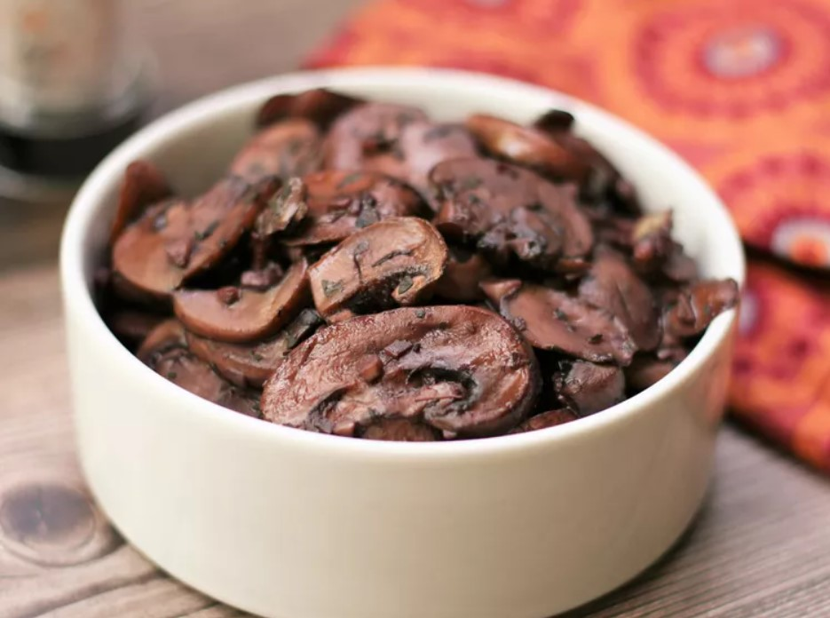

Galic Mushroom

Description
easy to make by sautéing sliced mushrooms in butter with red wine
Ingredients
- butter
- mushroom
>
- garlic
- basil
- red wine
Steps
- Heat butter in a skillet over medium heat. Add mushrooms and garlic; cook and stir until mushrooms are a light golden brown and liquid has evaporated, about 10 minutes. Stir in basil.
- Reduce heat to low, and pour wine into the skillet. Simmer until wine has mostly evaporated. Serve immediately.